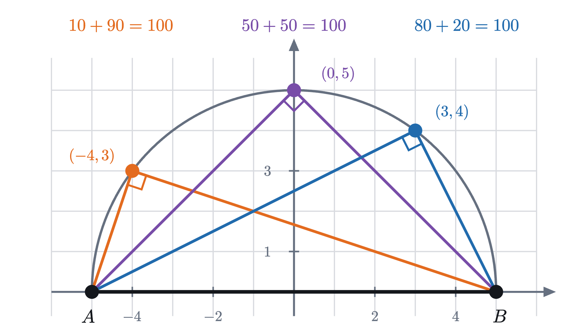
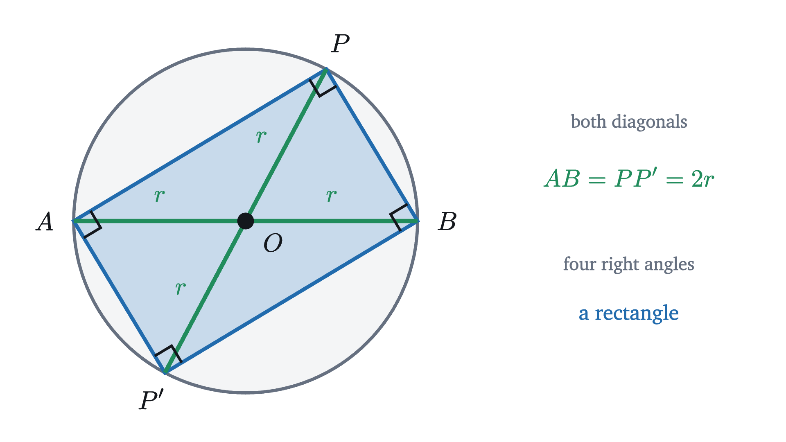
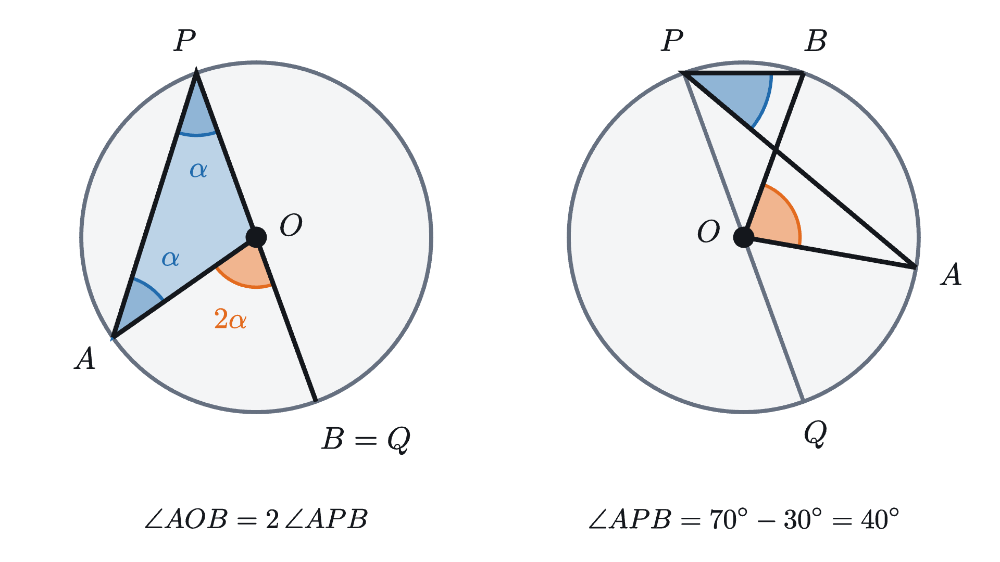
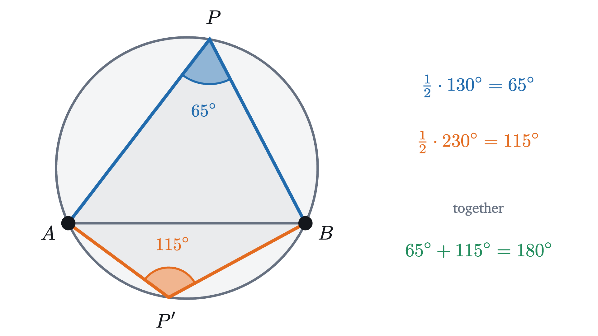
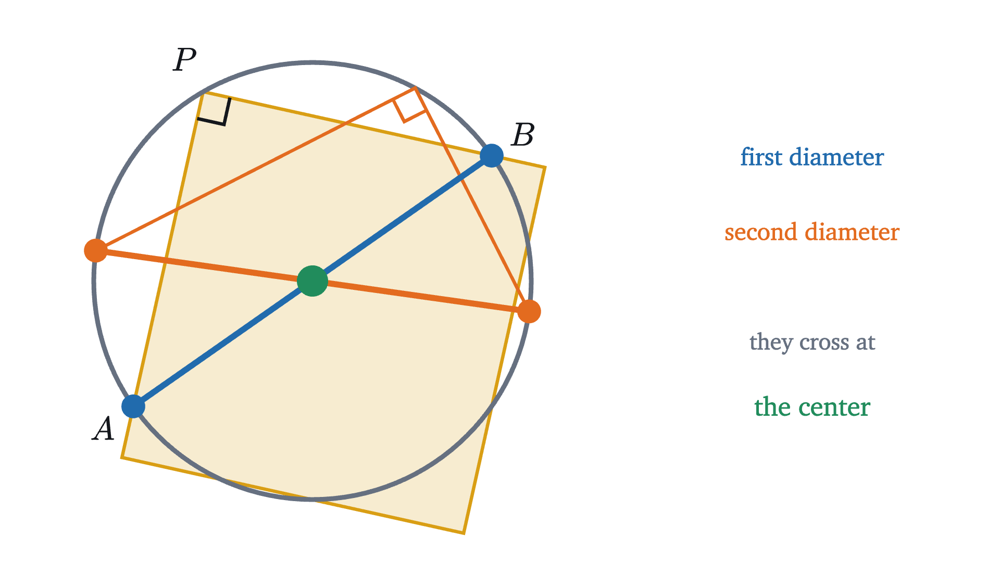
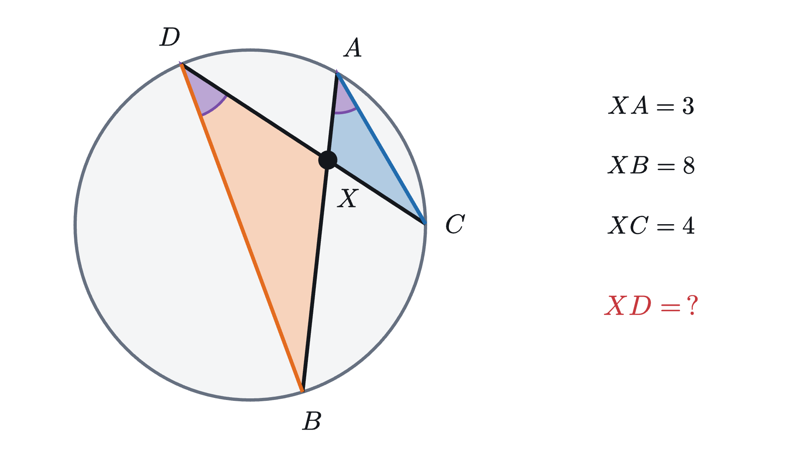

The inscribed angle theorem and Thales' semicircle
From every point on one arc of a circle, a chord is seen under the same angle, half the angle at the center. Two isosceles triangles explain why.
AssumesWhy the angles of a triangle add to 180°The Pythagorean theorem: a proof you can see
Two posts, $A$ and $B$, stand on the rim of a circular pond. Walk along the rim and keep looking at them. As you go, one post comes nearer and the other recedes, and the triangle you form with them changes from tall to squat to lopsided. In the animation the two distances swing between about one radius and nearly the full width of the pond. Through all of it the angle between your two lines of sight, the angle at $P$, does not move from 50°.
Nothing in the triangle $APB$ looks constant except that one angle. Why should it be? And why 50°, when the posts could have been placed anywhere?
Is it the circle that matters?
One reaction is to doubt that the circle has much to do with it. Perhaps the angle under which you see two posts simply does not depend much on where you stand. That is easy to test: step off the rim.
The angle is far from constant. Close to the posts it is wide, far away it is narrow, and it passes through every value in between. The circle through $A$ and $B$ is the exact boundary on which it takes one particular value, in this case 55°. So the circle is doing something precise, and we need to find out what.
The smallest case: a diameter
The plan is to start with the most symmetric arrangement and understand it completely. Put the two posts at opposite ends of a diameter.
To have numbers to work with, use coordinates. Take the circle of radius 5 centered at the origin, with $A = (-5, 0)$ and $B = (5, 0)$. The point $(3, 4)$ is on this circle, because $3^2 + 4^2 = 25$.
Pause and try
Let $P = (3, 4)$. Compute $PA^2$, $PB^2$ and $AB^2$ with the distance formula. What does the converse of the Pythagorean theorem (if $a^2 + b^2 = c^2$ in a triangle, the angle opposite $c$ is a right angle) say about triangle $APB$? Then repeat with $P = (-4, 3)$.
Show answerHide answer
For $P = (3, 4)$: $PA^2 = (3 + 5)^2 + 4^2 = 80$ and $PB^2 = (3 - 5)^2 + 4^2 = 20$, while $AB^2 = 10^2 = 100$. Since $80 + 20 = 100$, the converse of the Pythagorean theorem says the angle opposite $AB$, which is the angle at $P$, is a right angle. For $P = (-4, 3)$: $PA^2 = 1 + 9 = 10$ and $PB^2 = 81 + 9 = 90$, and again $10 + 90 = 100$.

All three points give right angles, and the algebra shows this is no accident of the chosen points. If $P = (x, y)$ is any point of the circle, so that $x^2 + y^2 = 25$, then
So the angle at $P$ is always 90°. That settles the fact, but a calculation in which the terms $10x$ and $-10x$ cancel does not show why. The reason is in the one thing a circle gives us for free: every point on it is the same distance from the center.
Draw the segment from the center $O$ to $P$. It has the same length as $OA$ and $OB$, since all three are radii, and it cuts the triangle $APB$ into two triangles that each have two equal sides.
The figure uses one fact about triangles with two equal sides. A triangle with two equal sides is called isosceles, and its angles opposite the equal sides are equal. (This is Euclid’s Proposition 5 of Book I. One way to see it: flip the triangle over so that the two equal sides trade places. It lands exactly on itself, so the two angles at the base trade places as well, and must be equal.)
Tradition credits the theorem to Thales of Miletus, who lived around 600 BC.
The converse, and a rectangle
The theorem has a converse, and the neatest way to see both at once is to complete the picture. Continue the radius $PO$ through the center to the opposite point $P'$ of the circle.

Thales’ theorem applies at each of the four corners, since each corner is a point of the circle looking at a diameter. So $APBP'$ has four right angles and is a rectangle. Read backward, the picture says that every right triangle is half of a rectangle, and a rectangle’s diagonals are equal and cut each other in half. That gives the converse.
Together the two theorems say that the circle with diameter $AB$ is exactly the set of points from which $AB$ is seen at a right angle, apart from $A$ and $B$ themselves.
Pause and try
The front of a building is a straight wall 30 m long. A photographer wants to stand where the wall spans an angle of exactly 90° in her view. Describe all the places she can stand. How far is each of them from the middle of the wall?
Show answerHide answer
Call the ends of the wall $A$ and $B$. By Thales’ theorem and its converse, the points with $\angle APB = 90°$ are the points of the circle with diameter $AB$. She can stand anywhere on the half of that circle in front of the building. Every such point is a radius away from the center of the circle, which is the middle of the wall: exactly 15 m, wherever she stands.
From a diameter to any chord
Now return to the pond, where the posts were not opposite each other. A segment joining two points of a circle is called a chord. In the first animation the chord $AB$ was seen from the rim at 50°, and the angle at the center, $\angle AOB$, was 100°. In the second, the rim angle was 55° and the angle at the center was 110°. For a diameter the angle at the center is a straight angle, 180°, and Thales gives 90°.
| angle at the center | angle at the rim |
|---|---|
| 100° | 50° |
| 110° | 55° |
| 180° | 90° |
The pattern is hard to miss, and the next animation tests it by moving one of the posts.
If the angle at the rim is always half the angle at the center, the opening puzzle is solved at once. The angle at the center depends only on $A$, $B$ and $O$. It knows nothing about where $P$ is. Half of it is then the same for every $P$.
So the claim to prove is “half”. The proof of Thales’ theorem worked by drawing the radius to $P$, which produced isosceles triangles. The same radius is available here.
Pause and try
In the first slide of the next figure, the chord $AB$ does not pass through $O$, so the radius $OP$ no longer splits triangle $APB$ into two triangles. Extend it instead: draw the full diameter from $P$ through $O$ to the far side of the circle at $Q$. Let $\alpha = \angle APQ$. Using the isosceles triangle $AOP$, find $\angle AOQ$ in terms of $\alpha$.
Show answerHide answer
In triangle $AOP$, $OA = OP$, so the angle at $A$ equals the angle at $P$, which is $\alpha$. The third angle is $\angle AOP = 180° - 2\alpha$. The angles $\angle AOP$ and $\angle AOQ$ lie side by side along the straight line $PQ$, so $\angle AOQ = 180° - (180° - 2\alpha) = 2\alpha$. The angle at the center is twice the angle at $P$.
This is Thales’ proof with one change. There, the two central pieces $2\alpha$ and $2\beta$ lay along a straight line and added to 180°. Here they add to whatever the angle at the center happens to be.
The statement
To state the result properly we need names for the two kinds of angle, and some care about which arc is meant, because two points cut a circle into two arcs.
Case 1 is the one in the stepped figure. In the other two the center is on a side of the angle or outside it, and the same lemma does the work with a subtraction in place of the addition.

In the right-hand picture the arcs from $Q$ to $B$ and from $Q$ to $A$ have central angles 140° and 60°, so the inscribed angles $\angle QPB$ and $\angle QPA$ are 70° and 30°, and their difference is 40°, half of $\angle AOB = 80°$.
Thales’ theorem is the special case in which the intercepted arc is a semicircle: half of 180° is 90°.
The other side of the chord
The definition was careful about which arc is intercepted, and the reason shows up when $P$ crosses to the other side of the chord.
Pause and try
A chord $AB$ cuts off a short arc with central angle 130°. A point $P$ on the long arc sees the chord at $\frac{1}{2} \cdot 130° = 65°$. What angle does a point $P'$ on the short arc see? Which arc does its angle intercept?
Show answerHide answer
The angle at $P'$ intercepts the arc from $A$ to $B$ that does not contain $P'$, which is the long arc. Its central angle is $360° - 130° = 230°$, so $\angle AP'B = 115°$. Notice that $65° + 115° = 180°$.

This always happens. The two arcs make up the whole circle, so their central angles add to 360°, and the inscribed angles on them, being halves, add to 180°. The four points $A$, $P$, $B$, $P'$ form a four-sided figure with all its corners on a circle, called a cyclic quadrilateral, and we have shown that its opposite angles at $P$ and $P'$ add to 180°. The same argument with the chord $PP'$ covers the other pair, at $A$ and $B$.
So the opening claim needs a qualification. Walking around the pond, the angle stays the same as long as you stay on one side of the chord. If you pass a post and continue along the short arc, the angle jumps to 180° minus its former value.
Using the theorem
The next example is a practical trick, and it runs the theorem in the reverse direction: from a known inscribed angle to the arc.

Where the theorem stops
The theorem needs the vertex on the circle, and the second animation showed what happens otherwise. The problems below ask you to prove that an interior point sees a chord at a larger angle and an exterior point at a smaller one.
There is also a limiting case. As $P$ slides along the arc toward $A$, the side $PB$ turns into the chord $AB$, and the side $PA$ shrinks to nothing while its direction approaches that of the tangent line at $A$. The angle keeps its value all the way, which suggests that the angle between a chord and the tangent at one of its ends equals the inscribed angle on the far side. That is true, and the last but one problem proves it directly.
Finally, the whole lesson takes place in a flat plane. The proof used the angle sum of a triangle at every step. On a sphere, where the angle sum is more than 180°, the proof breaks down, and neither Thales’ theorem nor the inscribed angle theorem holds there.
Looking back
The hard part was finding anything in the moving triangle $APB$ to hold on to. The answer was a point that is not part of the triangle at all, the center $O$. Joining it to the three points on the circle produces radii, equal radii produce isosceles triangles, and isosceles triangles produce equal angles. Almost every proof about angles in a circle starts with that move: draw the radii.
The second idea was to solve the symmetric case first. Thales’ theorem looked like a special fact about diameters, and the general theorem turned out to be the same argument with the diameter drawn through $P$ in place of the one through $A$ and $B$.
Check yourself
Points $A$ and $B$ on a circle with center $O$ satisfy $\angle AOB = 80°$. A point $P$ lies on the shorter of the two arcs from $A$ to $B$. What is $\angle APB$?
Problems
Problem 1
Points $A$ and $B$ on a circle with center $O$ satisfy $\angle AOB = 84°$. Find the angle $\angle APB$ for a point $P$ on the longer arc, and for a point $P'$ on the shorter arc.
Show solutionHide solution
For $P$ on the longer arc, the intercepted arc is the shorter one, with central angle 84°, so $\angle APB = 42°$. For $P'$ on the shorter arc, the intercepted arc is the longer one, with central angle $360° - 84° = 276°$, so $\angle AP'B = 138°$. Check: $42° + 138° = 180°$.
Problem 2
$AB$ is a diameter of a circle of radius 6.5, and $P$ is a point of the circle with $PA = 5$. Find $\angle APB$ and the length $PB$.
Show solutionHide solution
By Thales’ theorem $\angle APB = 90°$. So $APB$ is a right triangle with hypotenuse $AB = 13$ and one leg 5. By the Pythagorean theorem $PB^2 = 13^2 - 5^2 = 169 - 25 = 144$, so $PB = 12$.
Problem 3
On a clock face, a triangle has its corners at the 12, the 4 and the 9. Find its three angles.
Show solutionHide solution
The twelve hour marks divide the circle into arcs of $360° / 12 = 30°$. The angle at the 9 intercepts the arc from 12 to 4 that avoids the 9, which spans 4 hours, or 120°. So the angle at the 9 is 60°. The angle at the 12 intercepts the arc from 4 to 9 that avoids the 12: 5 hours, 150°, giving 75°. The angle at the 4 intercepts the arc from 9 to 12 that avoids the 4: 3 hours, 90°, giving 45°. Check: $60° + 75° + 45° = 180°$.
Problem 4
(a) A cyclic quadrilateral $ABCD$ has $\angle A = 70°$ and $\angle B = 95°$. Find $\angle C$ and $\angle D$. (b) Show that a parallelogram whose four corners lie on a circle must be a rectangle.
Show solutionHide solution
(a) Opposite angles of a cyclic quadrilateral add to 180°. The angle opposite $A$ is $C$, so $\angle C = 110°$, and the angle opposite $B$ is $D$, so $\angle D = 85°$. Check: the four angles add to $70° + 95° + 110° + 85° = 360°$, as the angles of any quadrilateral do.
(b) In a parallelogram, opposite angles are equal. If its corners lie on a circle, opposite angles also add to 180°. Two equal angles that add to 180° are each 90°. So all four angles are right angles and the parallelogram is a rectangle.
Problem 5
Let $A$ and $B$ be points of a circle, and let $\theta$ be the inscribed angle on the chord $AB$ from points of one of the two arcs. Let $P$ be a point on the same side of the line $AB$ as that arc. (a) Suppose $P$ is inside the circle, and let the line $AP$, continued beyond $P$, meet the arc at $P'$. Show that $\angle APB > \theta$. (b) Suppose $P$ is outside the circle. The segment from $P$ to the midpoint $M$ of $AB$ crosses the arc at a point $P'$. Continue the line $AP'$ beyond $P'$ until it meets the segment $PB$ at $N$, and show that $\angle APB < \theta$. You may use the fact that an exterior angle of a triangle equals the sum of the two interior angles at the other corners.
Show solutionHide solution
(a) The point $P'$ is on the arc, so $\angle AP'B = \theta$. Since $P$ lies on the segment $AP'$, this is also the angle of triangle $PP'B$ at $P'$. The angle $\angle APB$ is an exterior angle of triangle $PP'B$ at $P$, because $A$, $P$, $P'$ lie on a line with $P$ between. So
(b) The point $P'$ lies on the segment $PM$, which joins a corner of triangle $APB$ to a point of the opposite side. So $P'$ is inside that triangle, and the line from $A$ through $P'$ leaves it through the side $PB$, at $N$. Now $\theta = \angle AP'B$ is an exterior angle of triangle $P'NB$ at $P'$, and $\angle ANB$ is an exterior angle of triangle $APN$ at $N$. So
Together with the theorem, this shows that among points on one side of the line $AB$, the arc is exactly the set of points that see the chord at the angle $\theta$. (The exterior angle fact follows from the angle sum: the exterior angle and the interior angle beside it add to 180°, and so do all three interior angles.)
Problem 6
A line that touches a circle at a single point $A$ is called a tangent, and it is perpendicular to the radius $OA$. Let $AB$ be a chord whose shorter arc has central angle $2\theta$, with $2\theta < 180°$, and let $T$ be a point of the tangent at $A$ on the same side of the line $OA$ as $B$. Show that $\angle TAB = \theta$, the inscribed angle on the chord $AB$ from the longer arc.
Show solutionHide solution
Triangle $AOB$ is isosceles with $OA = OB$ and angle $2\theta$ at $O$. Its other two angles are equal and add to $180° - 2\theta$, so $\angle OAB = 90° - \theta$. The tangent is perpendicular to $OA$, so $\angle OAT = 90°$. The point $B$ lies on the same side of the tangent as $O$ (the whole circle does) and on the same side of $OA$ as $T$, so the ray $AB$ lies inside the right angle $\angle OAT$, and
A point of the longer arc sees the chord at half the central angle $2\theta$, which is the same $\theta$.

Problem 7
Two chords $AB$ and $CD$ of a circle cross at a point $X$ inside the circle, as in the figure above. (a) Show that triangles $XAC$ and $XDB$ are similar. (b) Deduce that $XA \cdot XB = XC \cdot XD$. (c) If $XA = 3$, $XB = 8$ and $XC = 4$, find $XD$.
Show solutionHide solution
(a) The angle of triangle $XAC$ at $A$ is $\angle BAC$, an inscribed angle that intercepts the arc from $B$ to $C$ not containing $A$. The angle of triangle $XDB$ at $D$ is $\angle CDB$, an inscribed angle that intercepts the arc from $C$ to $B$ not containing $D$. Because the chords cross, the points come in the order $A$, $C$, $B$, $D$ around the circle, so the arc between $C$ and $B$ that avoids $A$ also avoids $D$: both angles intercept the same arc, and they are equal. The angles of the two triangles at $X$ are equal as well, because they are opposite angles where two lines cross. Two pairs of equal angles make the triangles similar: $\triangle XAC \sim \triangle XDB$, with $X$ matching $X$, $A$ matching $D$ and $C$ matching $B$.
(b) Matching sides are in the same ratio: $\dfrac{XA}{XD} = \dfrac{XC}{XB}$. Multiplying both sides by $XD \cdot XB$ gives $XA \cdot XB = XC \cdot XD$.
(c) $3 \cdot 8 = 4 \cdot XD$, so $XD = 6$. Check: $3 \cdot 8 = 24 = 4 \cdot 6$.